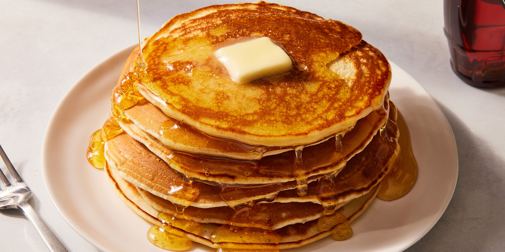

Naleśniki

O daniu
Naleśnik amerykański to mały i gruby, okrągły i płaski, miękki i pulchny placek zrobiony ze średnio rzadkiego ciasta na bazie
mąki, mleka i jajek, z dodatkiem środka spulchniającego, usmażony na złocisty kolor z obu stron na lekko natłuszczonej patelni.
Składniki
- 100g mąki.
- 2 duże jajka.
- 300ml mleka.
- 1 łyżka oleju do ciasta.
- aromat cytrynowy (opcjonalnie)
- cukier puder do dokerocji (opcjonalnie)
Powrót